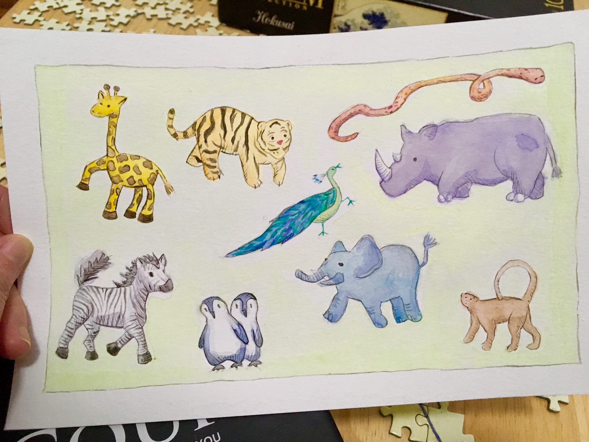
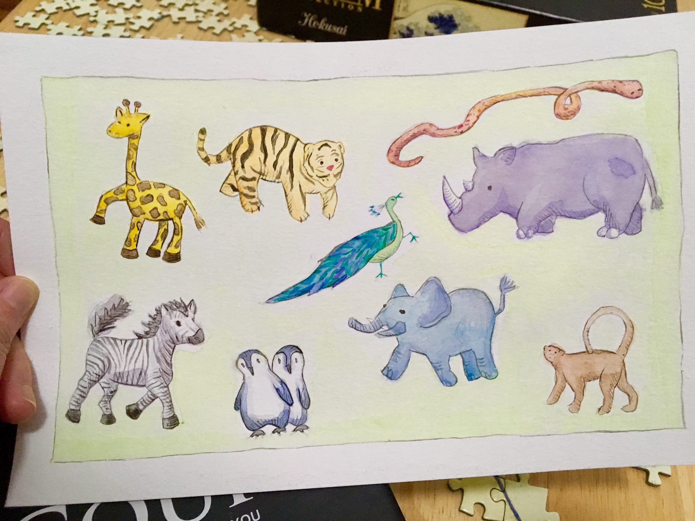

Here's a selection of my traditional-art drawings! I've never actually taken a technical painting / drawing class, so my use of paint is all self-taught through trial and lots of error.
For my cat art fundraiser, I painted a lot of cats on index card-sized paper:


I also experimented with acrylic for the first time by painting some koi:
With watercolor, I've been trying to use a lot of colors in my landxcape paintings:

And sometimes, I enjoy drawing more whimsical things :)
 
